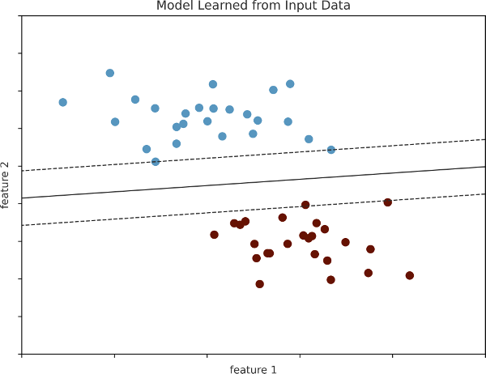
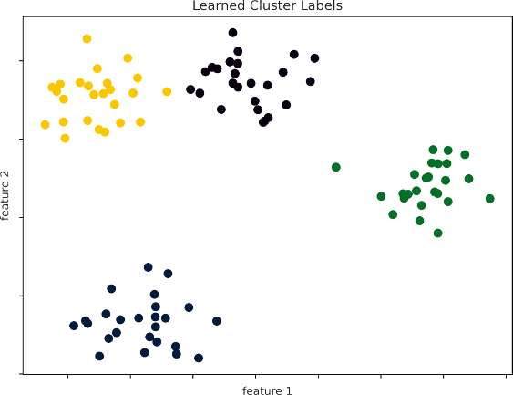
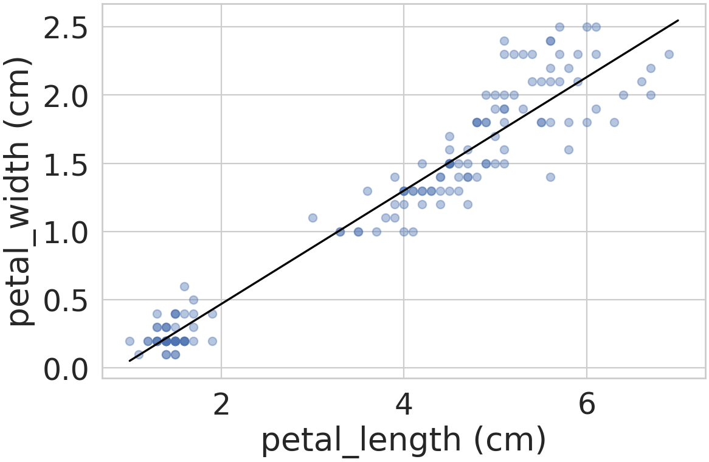
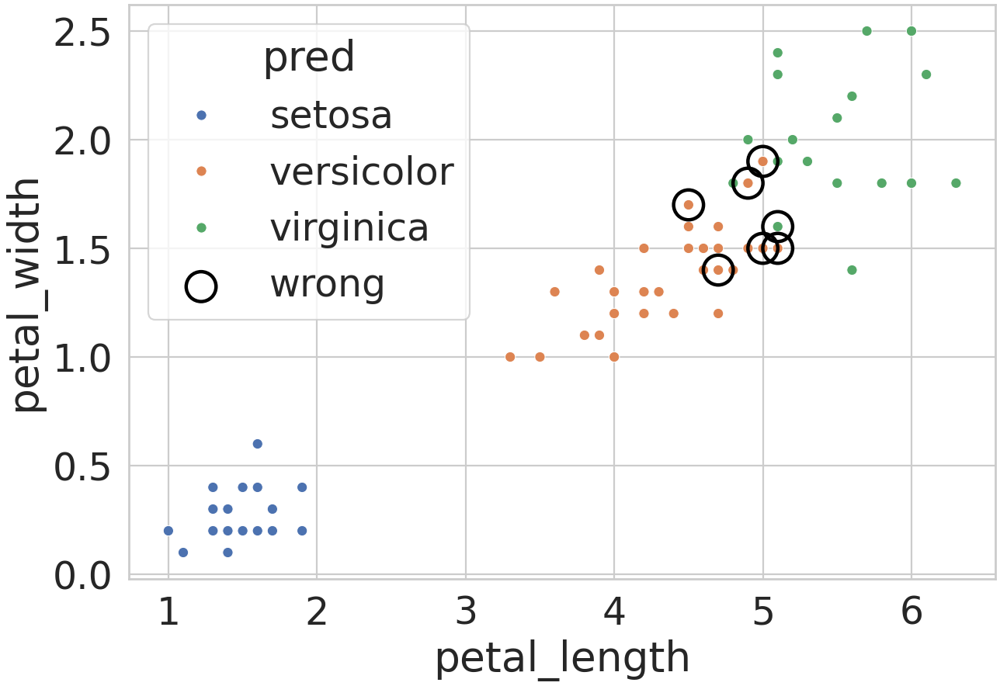

| 이미 아는 내용 | 새로 해결할 문제 | 수업 순서 |
|---|---|---|
| DataFrame 열 선택(4주차), Seaborn 예제 표(10주차) | 표를 모델 입력 모양으로 나누기 | 머신러닝 과제 네 유형 → 입력 X(측정값 열)·y(답 열) |
Matplotlib scatter·plot(6주차), np.linspace(3주차) | 어떤 모델이든 같은 순서로 학습·예측 | Scikit-Learn(파이썬 머신러닝 라이브러리) 사용 순서 → 그림 1: 회귀(꽃잎 길이로 꽃잎 너비 같은 숫자 값 예측)의 예측 직선을 측정값과 겹친 회귀선 → 같은 꽃잎 너비 예측을 다른 도구로 학습해 비교한 Scikit-Learn 선택 이유 |
불리언 마스크(3·4주차), hue 그룹 색(10주차) | 모델이 처음 보는 꽃을 맞힌 비율(성능) | 학습에 쓴 꽃으로 평가할 때의 함정 → 따로 둔 꽃으로 평가 → 그림 2: 예측 품종 색과 오답 표시 |
데이터시각화 · 머신러닝 결과 시각화 기초01 / 13
Outline
- 붓꽃 150송이 측정 표 → 식물 연구원이 보고서 파일(
report.md)에 첨부된 PNG 2장으로 보게 될 머신러닝 결과 그림 작성(PNG 저장은savefig(6주차), 실습에서 수행) - 머신러닝 모델: 측정값에 맞춰 내부 숫자를 조정한 뒤 새 입력에 답을 내는 계산 규칙
- 완성 기준: 그림 2장마다 모델의 입력·출력과 그림의 선·색·위치가 나타내는 값 설명 가능
← → 이동 · Home 처음 · End 끝 · Esc 목록
데이터시각화 · 머신러닝 결과 시각화 기초02 / 13
지도 학습과 비지도 학습의 출력 그림
질문: 레이블이 있을 때와 없을 때 모델은 각각 무엇을 학습해 어떤 그림을 내는가?
- 학습(fit): 모델이 데이터에 맞춰 내부 숫자(매개변수)를 정하는 계산 · 예측: 학습한 모델로 새 입력의 답을 내는 계산
- 레이블(label): 데이터 한 행(그림의 점 하나)마다 붙은 답 · 지도 학습 = 레이블 있는 데이터로 학습, 비지도 학습 = 레이블 없이 측정값의 구조만 학습

- 가로·세로축 feature 1·2 = 측정 항목(특징) 2개, 점 색 = 레이블 2종, 제목 Model Learned from Input Data = 입력으로 학습한 모델
- 실선 = 두 색을 가르도록 학습한 경계 직선, 새 점은 실선의 어느 쪽인지로 색 예측 · 점선 = 교재 모델의 경계 여백 표시(이 강의 범위 밖)

- 입력 점에는 색 없음(레이블 없음), 점 색 = 모델이 가까운 점끼리 묶어 붙인 번호 4종, 제목 Learned Cluster Labels = 학습한 군집 번호
- 번호 = 묶음을 구분하는 이름, 정답 레이블 아님
- 분류(지도 학습 예) 그림 = 레이블 색 + 학습한 경계 · 군집(비지도 학습 예) 그림 = 모델이 붙인 번호 색 · 다른 과제는 3장
← → 이동 · Home 처음 · End 끝 · Esc 목록
데이터시각화 · 머신러닝 결과 시각화 기초03 / 13
붓꽃 표로 묻는 네 질문과 과제 유형
질문: 붓꽃 표에 던지는 네 질문은 각각 어떤 과제이고 어떤 출력을 내는가?
- 붓꽃(iris) 표: Seaborn 예제 데이터, 꽃 150송이마다 꽃받침(sepal)·꽃잎(petal)의 길이·너비 4개(cm)와 품종(species) 3종
- 분류 = 이산 레이블(정해진 몇 개 값 중 하나) 예측 · 회귀 = 연속 레이블(크기를 가진 숫자) 예측
- 차원 축소 = 측정값 4개(차원 = 측정 항목 수)를 요약해 더 적은 수의 새 값(새 좌표)으로 다시 계산하기 · 군집(cluster) = 레이블 없이 측정값이 서로 비슷한 꽃끼리 묶기
| 붓꽃 질문 | 과제 유형 | 학습에 쓰는 레이블 | 모델 출력 | 결과 그림 |
|---|---|---|---|---|
| 꽃잎 길이로 꽃잎 너비를 예측할 수 있는가 | 회귀(지도) | 꽃잎 너비(cm) | 연속값 | 산점도 위 예측 직선(회귀선) |
| 측정값 4개로 품종을 맞히는가, 어디서 틀리는가 | 분류(지도) | 품종 | 품종 이름 | 예측 품종 색 산점도 + 오답 표시 |
| 측정값 4개를 두 축 그림 한 장에 담을 수 있는가 | 차원 축소(비지도) | 없음 | 새 좌표 2개(측정값 4개로 새로 계산한 두 숫자) | 새 좌표 산점도 |
| 품종 이름 없이 묶으면 같은 품종의 꽃끼리 한 군집에 모이는가 | 군집(비지도) | 없음 | 군집 번호 | 군집 번호 색 산점도 |
- 과제 유형 = 레이블 유무 × 출력 종류(연속값 = 연속 레이블 예측, 품종 이름 = 이산 레이블 예측, 새 좌표, 군집 번호) → 출력 종류가 그림의 표시 방식(선·색·위치)을 결정
← → 이동 · Home 처음 · End 끝 · Esc 목록
데이터시각화 · 머신러닝 결과 시각화 기초04 / 13
특징 행렬 X와 타깃 배열 y
질문: 붓꽃 표의 행과 열은 Scikit-Learn 입력의 어느 부분이 되는가?
- 표본(sample) = 표의 행 하나 = 꽃 한 송이 · 특징(feature) = 측정값 열 하나 · 타깃(target) = 예측할 답의 열 = 2장의 레이블을 담은 열(이산·연속 레이블 모두 타깃)
- Scikit-Learn: 파이썬 머신러닝 라이브러리(import 이름
sklearn), 표를 X(특징)·y(타깃) 두 부분으로 나눠 입력 · 지도 학습 모델은 X·y, 비지도 학습 모델은 X만 받음
main.py 첫 부분: import(별칭 np·pd·plt·sns는 이전 강의와 같음) → 붓꽃 표 → X·y
import numpy as np
import pandas as pd
import matplotlib.pyplot as plt
import seaborn as sns
sns.set_theme(style='whitegrid', font_scale=2)
iris = sns.load_dataset('iris')
print(iris.shape)
print(iris.head(3))
X = iris[['sepal_length', 'sepal_width',
'petal_length', 'petal_width']]
y = iris['species']
print(X.shape, y.shape)- X의 i번째 행과 y의 i번째 값 = 같은 꽃(교재 Figure 38-2의 배치를 붓꽃 열로 다시 그린 오른쪽 표)
(150, 5) sepal_length sepal_width petal_length petal_width species 0 5.1 3.5 1.4 0.2 setosa 1 4.9 3.0 1.4 0.2 setosa 2 4.7 3.2 1.3 0.2 setosa (150, 4) (150,)
| 표의 열 | 뜻 | 입력 |
|---|---|---|
sepal_length·sepal_width | 꽃받침 길이·너비(cm) | X |
petal_length·petal_width | 꽃잎 길이·너비(cm) | X |
species | 품종 이름 | y |
- 특징 행렬 X: 2차원, 모양 (150, 4) = (표본 수, 특징 수) · 타깃 배열 y: 1차원, 모양 (150,) = 표본마다 답 하나
- 열 선택만으로 나눔: 측정값 4열 → X, 답 1열 → y, 행 순서 유지 → 표본마다 측정값과 답의 짝 보존
← → 이동 · Home 처음 · End 끝 · Esc 목록
데이터시각화 · 머신러닝 결과 시각화 기초05 / 13
모델 클래스와 하이퍼파라미터
질문: 모델 객체를 만든 순간에는 무엇이 정해지고 무엇이 아직 없는가?
- 클래스 = 모델 종류의 설계도(
LinearRegression), 객체 = 설계도로 만든 실제 모델 하나(model) · 사용 순서: ① 클래스 import → ② 하이퍼파라미터를 넣어 객체 생성 → ③ X·y 준비 → ④fit(학습) → ⑤predict(예측) - 하이퍼파라미터(hyperparameter): 학습 전에 사람이 정하는 설정값, 객체 생성 괄호 안에 지정 · 매개변수(학습이 데이터로 정하는 내부 숫자)와 다른 값
- 선형 회귀(
LinearRegression): 특징 X와 타깃 y의 관계를 직선 하나 y = wx + b(w = 기울기: x가 1 늘 때 y가 변하는 양, b = 절편)로 나타내는 회귀 모델 클래스
①·② 단계: 회귀 모델 객체 생성 직후 상태 확인
from sklearn.linear_model import LinearRegression
model = LinearRegression(fit_intercept=True)
print(model)
print(model.fit_intercept)
print(hasattr(model, 'coef_'))LinearRegression() True False
from sklearn.linear_model import LinearRegression: sklearn 안 선형 모델 모음(linear_model)에서 클래스 가져오기fit_intercept=True: y = wx + b의 w와 b(절편, x = 0일 때의 높이)를 둘 다 학습하라는 하이퍼파라미터 · False면 b = 0으로 고정한 y = wx로 w만 학습 · 기본값과 같아print(model)출력에서는 생략,model.fit_intercept출력 True로 저장 확인hasattr(객체, '이름'): 그 이름의 속성(객체에 붙은 값)이 있으면 True ·coef_(학습으로 정해질 기울기 매개변수) 없음 → False
- 객체 생성 = 설정 저장만, 데이터를 아직 보지 않음 → 기울기·절편은 ④
fit뒤에 생김(다음 장)
← → 이동 · Home 처음 · End 끝 · Esc 목록
데이터시각화 · 머신러닝 결과 시각화 기초06 / 13
fit의 입력 모양과 학습된 매개변수
질문: 특징 하나로 fit하려면 X를 어떤 모양으로 넘기고, fit 뒤 무엇이 생기는가?
앞 장 model: fit_intercept=True로 만든 LinearRegression 객체, 아직 coef_ 없음 · iris: 붓꽃 표 150행
- 회귀 질문: 꽃잎 길이(
petal_length) 하나로 꽃잎 너비(petal_width) 예측 → ③ X·y 준비와 ④fit
문제 발생: 열 하나를 Series(1차원)로 전달
model.fit(iris['petal_length'], iris['petal_width'])ValueError: Expected a 2-dimensional container but got <class 'pandas.Series'> instead. Pass a DataFrame containing a single row (i.e. single sample) or a single column (i.e. single feature) instead.
해결: 이중 대괄호로 열 하나짜리 DataFrame(2차원) 전달
X_len = iris[['petal_length']]
y_wid = iris['petal_width']
print(X_len.shape, y_wid.shape)
model.fit(X_len, y_wid)
print(model.coef_, model.intercept_)
print(hasattr(model, 'coef_'))(150, 1) (150,) [0.41575542] -0.3630755213190291 True
오류와 해결
- ValueError(값의 형식이 맞지 않을 때의 오류): X 모양은 항상 (표본 수, 특징 수) 2차원인데 1차원 Series (150,)를 받음 → 특징 1개여도 (150,)가 아닌 (150, 1) · 메시지의 container = 2차원 묶음, single column = 특징 1개인 (150, 1)
iris[['petal_length']]: 열 이름 목록 → DataFrameX_len(150, 1) · y 자리는 1차원 그대로 허용 →y_widSeries (150,)
학습된 매개변수
coef_= 기울기 0.416(꽃잎 길이 1cm 증가 → 예측 너비 0.416cm 증가), 특징마다 하나라 배열 ·intercept_= 절편 −0.363- 이름 끝 밑줄(_) =
fit이 데이터에서 계산한 학습된 매개변수, 사람이 정한 하이퍼파라미터와 구분
fit전coef_없음(앞 장 False) →fit뒤 기울기·절편 생성(True): 학습 = 매개변수 계산
← → 이동 · Home 처음 · End 끝 · Esc 목록
데이터시각화 · 머신러닝 결과 시각화 기초07 / 13
회귀선: 격자 입력의 예측값을 이은 선
질문: 학습한 회귀 모델을 산점도 위의 선으로 어떻게 그리는가?
앞 장 model: 꽃잎 길이 X_len(150, 1)으로 꽃잎 너비 y_wid를 학습, 기울기 0.416·절편 −0.363
- 회귀선: 가로축 값을 고르게 바꿔 가며 ⑤
predict로 계산한 예측값을 이은 선 = 학습한 모델 자체의 그림
xs = np.linspace(1, 7, 50)
grid = pd.DataFrame({'petal_length': xs})
pred = model.predict(grid)
print(grid.shape, pred[[0, -1]].round(3))
lengths = iris['petal_length']
print(lengths.min(), lengths.max())
fig, ax = plt.subplots(figsize=(8, 5))
ax.scatter(lengths, iris['petal_width'],
alpha=0.4)
ax.plot(xs, pred, color='black')
ax.set(xlabel='petal_length (cm)',
ylabel='petal_width (cm)')(50, 1) [0.053 2.547] 1.0 6.9
grid: 1~7cm를 같은 간격 50개(xs)로 나눈 새 입력 표, 열 이름을 학습 때와 같은petal_length로 맞춤(열 이름 없는 배열이면 경고 출력)- 출력 1행: 격자 표 모양 (50, 1)과 첫·마지막 예측 · 2행: 실제 꽃잎 길이 최솟값 1.0·최댓값 6.9
alpha=0.4 반투명이라 겹친 점일수록 진함), 검은 선 = 격자 50개의 예측값을 이은 회귀선
- 검산(6장 출력의 기울기 0.41576·절편 −0.36308): 0.41576 × 1 − 0.36308 ≈ 0.053, 0.41576 × 7 − 0.36308 ≈ 2.547 = 첫·마지막 격자값의 예측
- 선이 점 무리를 따라 올라감 → 꽃잎 길이가 길수록 예측 너비도 큼 · 말할 수 있는 범위: 관측된 꽃잎 길이 1.0~6.9cm 안의 예측
← → 이동 · Home 처음 · End 끝 · Esc 목록
데이터시각화 · 머신러닝 결과 시각화 기초08 / 13
표 데이터 분석에 Scikit-Learn을 쓰는 이유: 같은 회귀의 PyTorch 비교
질문: 같은 꽃잎 회귀를 PyTorch로 학습시키면 사람이 무엇을 더 정해야 하고, 붓꽃 표 분석에 Scikit-Learn을 쓰는 이유는 무엇인가?
그림 1(7장 회귀선) 완성 뒤 그 회귀를 맡긴 도구의 선택 이유 확인 단계(그림 변화 없음) · 6장: LinearRegression + fit → 기울기 w 0.416·절편 b −0.363 · 같은 150송이·같은 직선 y = wx + b(x = 꽃잎 길이, y = 예측 너비)를 PyTorch로 학습
| 비교 기준 | Scikit-Learn(5·6장 방식) | PyTorch(계산 순서를 직접 짜서 반복 학습시키는 파이썬 라이브러리 · 고치기 전 첫 w·b 고정 → 재실행해도 같은 수치) |
|---|---|---|
| 같은 회귀의 코드 | 객체 생성 + fit 2줄, 오른쪽 칸과 같은 오차를 가장 작게 하는 w·b를 반복 없이 계산 1번에 확정 | 직선 예측 y = wx + b → 오차(예측 너비와 실제 너비 차이의 제곱 평균) 계산 → 오차가 줄어드는 쪽으로 w·b를 조금 고치기, 이 세 단계의 반복을 직접 작성 |
| 추가로 정할 값 | 없음(학습률·반복 횟수 불필요) | 하이퍼파라미터(5장) 학습률(한 번 고칠 때 w·b를 움직이는 보폭)·반복 횟수 + 입력 크기 조정 여부(길이에서 평균을 빼고 흩어진 정도로 나눠 0 근처 값으로, 큰 입력에서 계산이 깨지는 것 방지) |
| 실측 기울기 w | 0.416(절편 b −0.363) | 입력 그대로·학습률 0.1: nan(숫자가 아님 표시: 고칠수록 값이 커져 계산이 깨짐)입력 그대로·학습률 0.01: 100회 0.268 → 1,000회 0.409 → 10,000회 0.416 입력 크기 조정·학습률 0.1: 100회 0.416(조정한 입력의 w를 cm 기준으로 되돌린 값) |
| 분류 모델 클래스 | 있음(객체 생성 → fit → predict) | 없음(분류용 계산 순서를 직접 짜면 가능) |
| 잘 맞는 일 | 표 데이터 분석과 결과 해석 | 사진·문장 같은 큰 데이터로 큰 모델을 그래픽 카드에서 학습 |
← → 이동 · Home 처음 · End 끝 · Esc 목록
데이터시각화 · 머신러닝 결과 시각화 기초09 / 13
학습에 쓴 꽃으로 잰 분류 정확도
질문: 학습에 쓴 꽃으로 정확도를 재면 왜 모델 성능을 믿을 수 없는가?
단계 전환: 5~8장 회귀(꽃잎 길이 1열 → 꽃잎 너비, 결과 = 150송이 모두로 학습한 회귀선, 처음 보는 꽃의 예측 성능은 아직 측정 안 함) 완료 → 지금부터 분류(측정값 4열 X → 품종 y), 같은 사용 순서에 새 분류 모델(k-최근접 이웃, 아래 정의)과 정확도 평가 추가 · 4장 X(150, 4)·y(150,)
- 분류 질문: 측정값 4개(X)로 품종(y) 맞히기 · 정확도(
accuracy_score(실제, 예측)): 예측 품종이 실제 품종과 같은 꽃의 비율(0~1) - k-최근접 이웃 분류(
KNeighborsClassifier): 새 꽃과 측정값 4개의 차이(거리)가 가장 작은 학습 꽃 k송이의 품종을 답으로 고르는 분류 모델 ·n_neighbors=1= 가장 가까운 1송이 ·fit= 기울기 같은 숫자 계산 없이 학습 꽃의 측정값·품종을 비교 대상으로 저장
X·y 전체 150송이로 학습한 뒤 같은 150송이로 평가
from sklearn.neighbors import KNeighborsClassifier
from sklearn.metrics import accuracy_score
knn = KNeighborsClassifier(n_neighbors=1)
knn.fit(X, y)
print(accuracy_score(y, knn.predict(X)))1.0
1.0이 나오는 이유
- 학습한 150송이를 그대로 다시 물음 → 각 꽃과 가장 가까운 학습 꽃 = 자기 자신(거리 0), 측정값이 똑같은 꽃이 있어도 품종이 같아 같은 답
- 그 꽃의 품종을 답으로 냄 → 150송이 모두 정답 = 외운 답의 확인
남는 문제
- 처음 보는 꽃에 대한 정확도는 측정되지 않음 → 학습에 쓰지 않은 꽃이 필요(다음 장)
- 같은 데이터로 학습·평가 = 문제와 답을 미리 보여 준 시험 → 1.0은 새 꽃에 대한 성능 근거 아님
← → 이동 · Home 처음 · End 끝 · Esc 목록
데이터시각화 · 머신러닝 결과 시각화 기초10 / 13
홀드아웃: 학습용과 평가용 분할
질문: 모델이 학습에서 보지 않은 꽃으로 재면 정확도는 얼마인가?
앞 장 knn: 측정값 4개의 거리가 가장 가까운 학습 꽃 1송이의 품종을 답으로 고르는 k-최근접 이웃 분류 모델(n_neighbors=1), 150송이 전체로 학습한 상태 · X(150, 4)·y(150,)
- 홀드아웃(holdout): 표의 일부 행을 학습에서 빼 두었다가 평가에만 쓰는 방법 ·
train_test_split: 행을 무작위로 섞어 학습용·평가용으로 나누는 함수
from sklearn.model_selection import train_test_split
X_train, X_test, y_train, y_test = train_test_split(
X, y, train_size=0.5, random_state=0)
print(X_train.shape, X_test.shape)
knn.fit(X_train, y_train)
y_pred = knn.predict(X_test)
print(accuracy_score(y_test, y_pred))(75, 4) (75, 4) 0.9066666666666666
비교: 평가한 꽃이 학습에 쓰였는지에 따른 정확도
| 평가한 꽃 | 학습에 사용 | 정확도 |
|---|---|---|
| 같은 150송이(앞 장, 150송이로 학습) | 사용 | 1.0 |
평가용 75송이(따로 둔 X_test, 75송이로 학습) | 사용 안 함 | 0.907 = 68/75 |
- 반환값 4개 순서: X 학습용·X 평가용·y 학습용·y 평가용, 한 꽃의 측정값과 품종은 같은 쪽으로 감
train_size=0.5: 150행 중 절반 75행을 학습용 ·random_state=0: 무작위로 섞는 순서를 정하는 시작 번호, 같은 번호면 같은 분할knn.fit다시 실행: 앞 장의 150송이 학습 결과를 학습용 75송이 학습 결과로 덮어씀 ·y_pred= 평가용 75송이의 예측 품종
- 평가용 꽃(학습에 쓰지 않아 모델이 처음 보는 꽃) 기준 정확도 0.907(약 91%) · 분할 한 번의 값:
random_state를 1~5로 바꾸면 0.947~0.973 →random_state=0분할을 포함한 범위 0.907~0.973
← → 이동 · Home 처음 · End 끝 · Esc 목록
데이터시각화 · 머신러닝 결과 시각화 기초11 / 13
실제 품종과 예측 품종의 혼동 행렬
질문: 틀린 꽃 7송이는 어떤 품종을 어떤 품종으로 잘못 예측했는가?
앞 장 y_test: 평가용 75송이의 실제 품종 · y_pred: 같은 75송이에 대한 knn 예측 품종 · 정확도 0.907 = 75송이 중 68송이 정답 → 오답 7송이 · pd: pandas 별칭
- 교차표: 두 값 목록의 짝마다 개수를 센 표,
pd.crosstab(행 기준, 열 기준)로 계산 · 혼동 행렬(confusion matrix) = 실제 품종(행) × 예측 품종(열)의 교차표
print(pd.crosstab(y_test, y_pred,
rownames=['true'], colnames=['pred']))pred setosa versicolor virginica true setosa 21 0 0 versicolor 0 28 2 virginica 0 5 19
출력 읽기
- 한 행 = 실제 품종 하나의 평가용 꽃, 한 칸 = 그중 열 이름 품종으로 예측된 수 ·
rownames·colnames= 행·열 제목(true 실제, pred 예측) - 대각선(같은 품종 짝) 21 + 28 + 19 = 68 = 정답 · 대각선 밖 2 + 5 = 7 = 오답 → 68/75 = 앞 장 정확도 0.907
- setosa 오답 0 · 오답은 모두 versicolor ↔ virginica 사이(versicolor → virginica 2송이, virginica → versicolor 5송이)
- 정확도 하나는 어느 품종을 어느 품종으로 틀렸는지 감춤 → 혼동 행렬로 헷갈리는 품종 쌍 확인, 산점도 속 오답 위치는 다음 장
← → 이동 · Home 처음 · End 끝 · Esc 목록
데이터시각화 · 머신러닝 결과 시각화 기초12 / 13
분류 결과 산점도: 예측 품종 색과 오답 표시
질문: 오답 7송이는 측정값 그림의 어디에 있는가?
10장 X_test: 평가용 75송이의 측정값 4개 · y_pred: 예측 품종 · y_test: 실제 품종 · sns·plt: Seaborn·Matplotlib 별칭
sns.scatterplot: 열 이름으로 산점도를 그리는 Seaborn 함수, data·x·y·hue 입력 방식은histplot과 같음(10주차) ·hue_order=order: 색 순서를 품종 이름 목록order로 고정 → 그림마다 같은 품종 = 같은 색
order = ['setosa', 'versicolor', 'virginica']
test = X_test.copy()
test['pred'] = y_pred
wrong = test[y_pred != y_test]
print(len(test), len(wrong))
fig, ax = plt.subplots(figsize=(9, 6))
sns.scatterplot(data=test, x='petal_length', y='petal_width',
hue='pred', hue_order=order, ax=ax)
ax.scatter(wrong['petal_length'], wrong['petal_width'],
s=300, facecolors='none', edgecolors='black',
linewidths=2, label='wrong')
ax.legend(loc='upper left', title='pred')75 7
- 출력 75 7 = 평가용 꽃 수·오답 수 · 점 색 = 새 열
pred의 예측 품종(실제 아님) - 범례 4항목 =
hue='pred'의 예측 품종 3개 +label='wrong'1개 · 마지막ax.legend(...)가 범례를 다시 만들어야 wrong 포함(생략 시 품종 3개만)
loc='upper left')
wrong: 예측 ≠ 실제인 행만 고른 불리언 마스크 결과 · 검은 빈 원(facecolors='none', 테두리edgecolors='black') = 코드가 그린 오답 표시
- 오답 7개 = versicolor·virginica가 섞인 꽃잎 길이 4.5~5.1cm 구간(setosa 오답 0) · 두 축 = 입력 4개 중 꽃잎 2개뿐(꽃받침 차이는 그림에 없음)
← → 이동 · Home 처음 · End 끝 · Esc 목록
데이터시각화 · 머신러닝 결과 시각화 기초13 / 13
Summary
- 공통 순서: 모델 객체 생성(하이퍼파라미터) →
fit→predict→ 출력을 그림으로 표시(회귀 = 격자 입력의 예측값을 이은 선, 분류 = 평가용 표의 새 열pred로 점 색) - 도구 선택(8장): 같은 꽃잎 회귀(150송이)의 기울기 w가 PyTorch 반복 학습에서는 입력 크기 조정 없이 학습률(한 번 고칠 때 w·b를 움직이는 보폭) 0.1이면
nan(숫자가 아님: 계산이 깨짐), 학습률 0.01·100회면 0.268, Scikit-Learn은fit1회로 0.416 확정 → 표 데이터의 회귀·분류에 Scikit-Learn
두 과제 비교: fit·predict에 넣은 입력과 받은 출력, 그린 방식, 학습 결과와 평가 성능을 나눠 기록
| 과제 | fit 입력 | predict 입력 → 출력 | 그림 표시(장) | 학습 결과 | 평가 성능 |
|---|---|---|---|---|---|
| 회귀 | X_len(150, 1)·y_wid(150,) | 격자 grid(50, 1) → 예측 너비(연속값) | 예측값을 이은 회귀선(7장) | 기울기 0.416·절편 −0.363 | 안 함(150송이 모두 학습에 사용) |
| 분류 | X_train(75, 4)·y_train(75,) | X_test(75, 4) → y_pred(품종 이름) | 예측 품종 색 + 오답 원(12장) | 학습용 75송이 저장(가장 가까운 꽃 비교 대상) | 평가용 정확도 0.907 = 68/75, 오답 7 = versicolor ↔ virginica |
- 성능 평가는 학습에 쓰지 않은 꽃으로: 분류에서 확인, 회귀도 같은 원리(7장 회귀선 = 150송이로 학습한 직선의 표시, 새 꽃 성능 근거 아님)
- 그림의 두 축이 모델 입력 전부인지 확인(분류 결과 산점도 = 입력 4개 중 2개)
- 전달: 7·12장의 fig를
savefig(6주차)로 PNG 저장 → 연구원은report.md에 첨부된 그림 2장으로 확인
← → 이동 · Home 처음 · End 끝 · Esc 목록